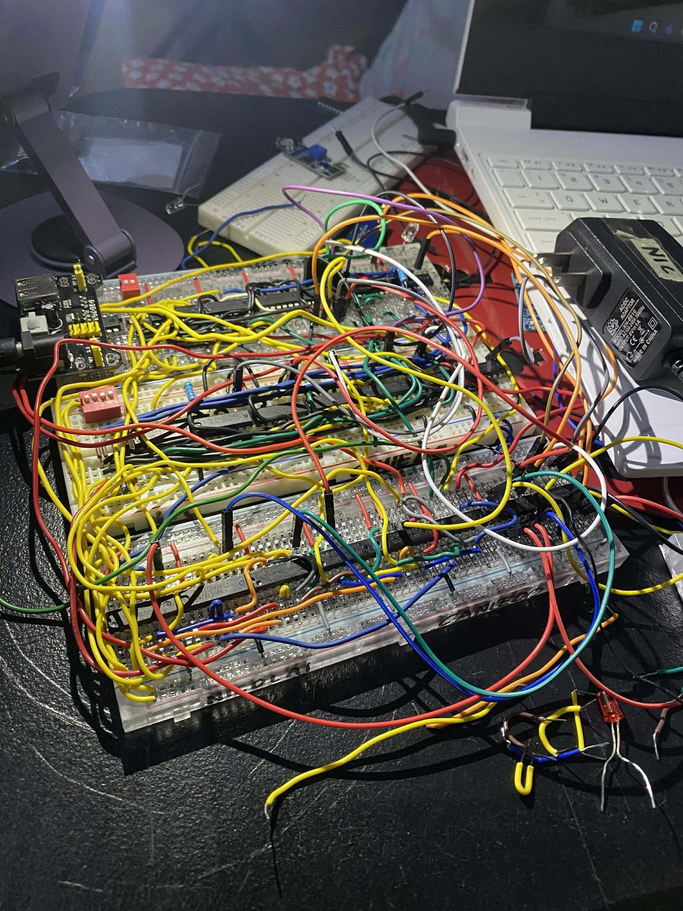

Initial

Final

This is a 16-Bit Multiplexers which is made of basic logic gates (ic).
It simulates how data inputs can share one output as it allows a single pathway to be shared among multiple data sources, directing only the chosen one to the output.
Built entirely from basic gates, it takes 16 different input signals and uses a set of select lines to decide which single signal gets through to the output. It is essentially the "traffic controller" of a digital circuit.